Testbericht 7 – Kernel-Korrekturen und variabler Radius
1 Umfang
- F1
shelleines verrundeten Körpers (dose_shell.scad war rot), F2surface(points)mit 2 × 2 oder 3 × 3 Punkten, F3 Naht- und Polkanten als eigene Kanten – die drei in Bericht 4, Abschnitt 7 gefundenen Fehler. Dazu F4: fase_chamfer.scad war ebenfalls rot (union(chamfer = 0.5)wählte acht statt zwei Kanten). - Variabler Radius (Spec „Variabler Radius (Stretch Goal)“):
fillet(r = function (p) …) { … }unddifference/union/intersection(fillet = function (p) …); Radius als Funktion der Position, an Stützpunkten jeder Kante ausgewertet, Hinweis „r 2–4“, Fehlerfälle wie beim konstanten Radius. Neues Beispielexamples/spec/variabler_radius.scad. - SMLib: Korrektur 1ed8669 (Zeigertabellen in Einfügereihenfolge) aus dem Fork-Zweig
capi-solidcraftals Patchsmlib/patches/0001-pointer-maps-insertion-order.patchüber 7eba8aa (smlib/fetch.shwendet ihn an). Fassaden-ABI 4 (sc_version()= 4): Kantenflags insc_edges,sc_law_stations,sc_fillet_var; Kernel-IDsmlib-7eba8aa+1/facade-4(neue Cache-Schlüssel).
2 Testumgebung
| Betriebssystem | Linux 6.18.44-fc-v153 (x64) |
|---|---|
| CPU | Intel(R) Xeon(R) Processor @ 2.10GHz · 4 Kerne |
| Rust | rustc 1.97.0 (2d8144b78 2026-07-07) |
| Node.js | v22.22.0 |
| Emscripten | emcc (Emscripten gcc/clang-like replacement + linker emulating GNU ld) 6.0.13 (e13ee988ce3d87a738dd8f3661d02223308c412a) |
| Browser | Chromium (Playwright 1.56.1), WebGL über SwiftShader, 1440 × 900 px |
| SMLib | tangency-labs/smlib capi-tess @ 7eba8aa + smlib/patches/0001 (1ed8669 aus capi-solidcraft, nur Quelltext), Fassade ABI 4 |
| Quelltext | Branch worktree-agent-a1ce9f9f0bb82a038, Commit 19f2e47 |
3 Fehler: Ursache, Korrektur, Nachweis
F1 shell eines verrundeten Körpers
- Ursache
- Nicht die Vorprüfung „no cavity“ (sie betrifft nur ebene, gegenüberliegende Wände; die Meldung „leaves no cavity“ kam nach SMLib, das einen offenen Körper zurückgab). SMLibs Schalenbildung mit geöffneter Fläche (
SmApiShellBrepFull→SmOffsetExecutive::ShellBrep, Zweig mit Öffnung überSmMerge) trägt an verrundeten Körpern nicht: je nach OptionenSM_ERR_NULL_POINTERinSmMerge.cpp:672, ein offener Körper aus den 26 Eingangsflächen, oder ein geschlossener Körper, dessen Randflächen fehlen und dessen innere Rundungen durch verlängerte Flächen ersetzt sind (11–15 Flächen fallen in der Gültigkeitsprüfung durch, Volumen 0,08 % daneben). Welcher Fall eintrat, hing an der Adressreihenfolge von SMLibs Zeigertabellen (daher nativ und Wasm verschieden). Der geschlossene Innenversatz desselben Körpers (SmApiOffsetBrepFull, −t) ist dagegen exakt (Volumen = Minkowski-Formel auf 10−7). - Korrektur
sc_shellversucht SMLibs Schale; scheitert sie oder überlappt sie sich, baut die Fassade die Schale aus Booleans: Körper − O − P1 − … − Pk, O der geschlossene Innenversatz, Pi ein Prisma über der Versatzfläche jeder geöffneten (ebenen) Fläche, von knapp innerhalb des Hohlraums bis über den Körper hinaus (aufgedickte Einzelfläche). Die Seitenwände des Prismas gehen durch den Rand der Versatzfläche: der Öffnungsrand ist das Band zwischen geöffneter Fläche und ihrem Versatz, wie bei SMLibs eigener Schale. Booleans über die geprüften Booleans der Fassade, Ergebnis mit der Gültigkeitsprüfung. Zusätzlich Patch 0001 (1ed8669): SMLibs Zeigertabellen geben Schlüssel in Einfügereihenfolge aus – Ergebnisse hängen nicht mehr von der Heap-Lage ab.- Nachweis
- Volumen gegen die geschlossene Form (abgerundeter Quader minus innerer abgerundeter Quader mit r − t minus Wandband unter der ebenen Deckfläche), STEP-Prüfung, gleiche Szenen nativ und Wasm (Abschnitt 5), Rust-Tests
shell_of_rounded_boxes,dose_shell_example_is_a_hollow_box,shell_of_a_rounded_box_open_at_the_top, Node-Test, Playwright E03.
| Fall | vorher (cad check) | erwartet | nachher | rel. Abw. | STEP | Diagnosen nachher |
|---|---|---|---|---|---|---|
| 90 × 34 × 18, r 3, Wand 1.6 | Z.2: Fehler (Kernel): shell gescheitert (1.6 mm): shell produced an invalid (self-overlapping) solid at 15 face(s); parameter too large? | 10.908,088 mm³ | 10.908,088 mm³ | 2.0e-10 | 54 Flächen | ok |
| 90 × 34 × 18, r 5, Wand 1.6 | Z.2: Fehler (Kernel): shell gescheitert (1.6 mm): shell: wall thickness 1.600000 leaves no cavity (SMLib returned no closed solid) | 10.822,339 mm³ | 10.822,339 mm³ | 1.1e-9 | 54 Flächen | ok |
| 50 × 35 × 30, r 4, Wand 1.5 | Z.2: Fehler (Kernel): shell gescheitert (1.5 mm): shell produced an invalid (self-overlapping) solid at 12 face(s); parameter too large? | 9.245,011 mm³ | 9.245,011 mm³ | 1.8e-9 | 54 Flächen | ok |
| 90 × 34 × 18, r 6, Wand 1.6 | Z.2: Fehler (Kernel): shell gescheitert (1.6 mm): shell: wall thickness 1.600000 leaves no cavity (SMLib returned no closed solid) | 10.754,828 mm³ | 10.754,828 mm³ | 7.3e-10 | 54 Flächen | ok |
| dose_shell.scad (mit Deckel) | Z.9: Fehler (Kernel): shell gescheitert (1.5 mm): shell produced an invalid (self-overlapping) solid at 11 face(s); parameter too large? | – | 12.697,900 mm³ | – | 80 Flächen | ok |
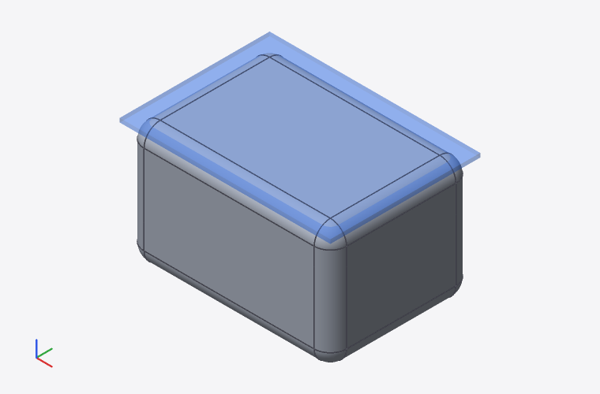
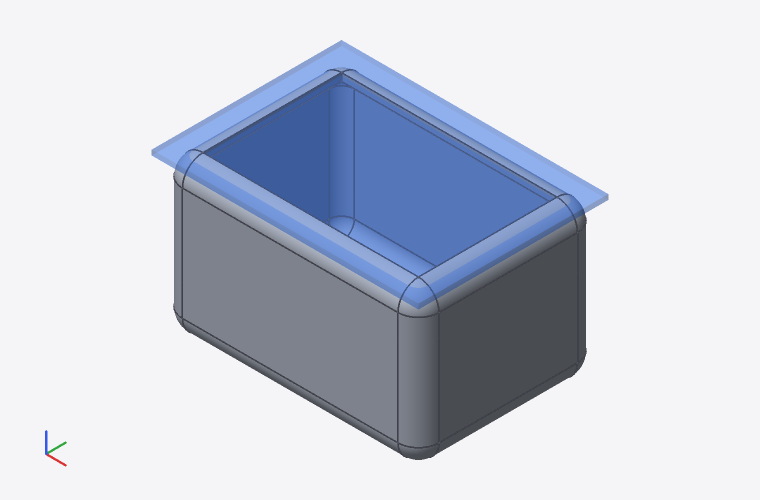
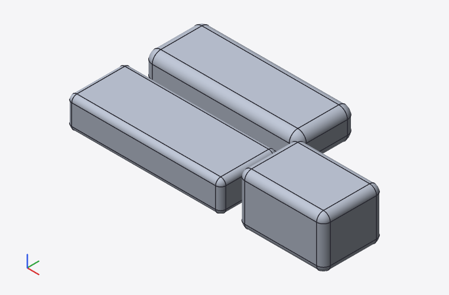
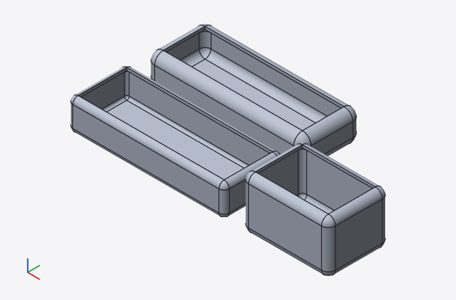
F2 surface(points) mit 2 × 2 oder 3 × 3 Punkten
- Ursache
SmApiCreateSurfaceFromOrderedPointsruftSmBSplineSurface::ApproximatePointsfest mit Grad 3 in beiden Richtungen auf; das braucht mindestens 4 Punkte je Richtung, sonstSM_ERR.- Korrektur
sc_nurbs_surfaceruftApproximatePointsselbst auf, mit Grad min(3, n − 1) je Richtung getrennt: bilinear bei 2, quadratisch bei 3, kubisch ab 4 (ab 4 × 4 unverändert). Mit so vielen Kontrollpunkten wie Punkten interpoliert die Ausgleichsrechnung die Punkte.- Nachweis
surfaces_get_the_degree_their_point_count_allows(Grade 1/1, 2/2, 1/3, 3/1, 3/3 im B-Rep, Punkte auf der Fläche),surfaces_from_two_and_three_points_per_direction(ebene Gitter 2 × 2 … 4 × 4: Fläche 400 mm²), Node-Test, Playwright E05.- Meldungen
- vorher: Z.1: Fehler (Kernel): surface gescheitert: SmApiCreateSurfaceFromOrderedPoints failed: SM_ERR (1001)
Z.2: Fehler (Kernel): surface gescheitert: SmApiCreateSurfaceFromOrderedPoints failed: SM_ERR (1001)
Z.3: Fehler (Kernel): surface gescheitert: SmApiCreateSurfaceFromOrderedPoints failed: SM_ERR (1001)
nachher: –
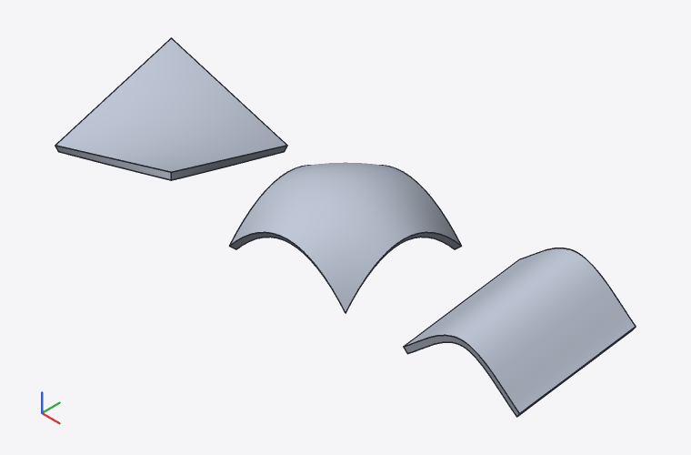
F3 Naht- und Polkanten zählten als Kanten
- Ursache
- Die Engine wählte bei
$fillet/$chamferalle Kanten des Primitivs und in Zonen alle Kanten in der Zone. SMLibs Zylinder hat eine Naht (gleiche Fläche auf beiden Seiten), die Kugel eine Naht von Pol zu Pol. Die Fassade übersprang solche Kanten beim Verrunden (GetBlendEdgeuse() == NULL), gezählt und gezeichnet wurden sie trotzdem; bei der Kugel blieb keine Kante übrig → Fehler. - Korrektur
sc_edgesmeldet je Kante Flags,SC_EDGE_SMOOTH= nichts zu verrunden (Naht, Pol, tangential stetiger Übergang innerhalb 2°, offener Rand; SMLibs eigenes Kriterium).EdgeInfo.smooth; die Engine wählt solche Kanten nie – bei$fillet/$chamfer, in Zonen und beifillet =an Booleans. Ein Primitiv ohne Kante zum Verrunden ergibt „0 Kanten“ als Warnung ohne Wirkung. Auch die tangentialen Ränder früherer Rundungen zählen nicht mehr (verschachtelte Blöcke).- Hinweise
- Zylinder vorher: cylinder: 3 Kanten · nachher: cylinder: 2 Kanten
Kugel vorher: sphere: 1 Kante · nachher: sphere: 0 Kanten
Meldungen vorher: Z.2: Fehler (Kernel): Verrundung gescheitert (1 mm): fillet: none of the edges can be blended (smooth, seam or open edges) · nachher: Z.2: Warnung (Kernel): 0 Kanten: das Primitiv hat keine Kanten zum Verrunden - Nachweis
seams_and_poles_are_not_edges(Zylinder 2 Kanten, Volumen mit zwei Fasenringen; Kugel 0 Kanten, Warnung, Volumen unverändert; Zone um den Zylinder 2 Kanten; Vereinigung zweier gleicher Zylinder: 0 neue Kanten),tangent_edges_of_rounds_are_not_selected,edges_flag_seams_poles_and_tangent_edges_as_smooth, Playwright E04 und C05.
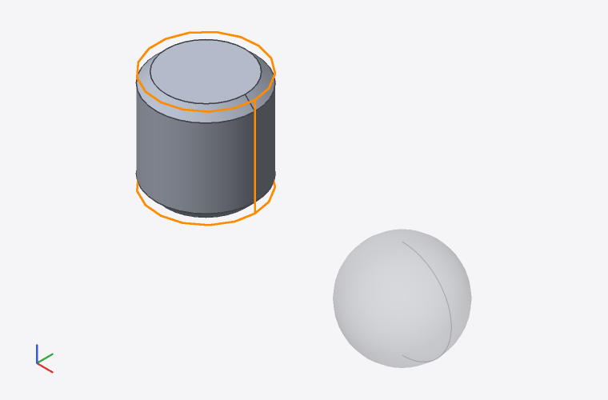
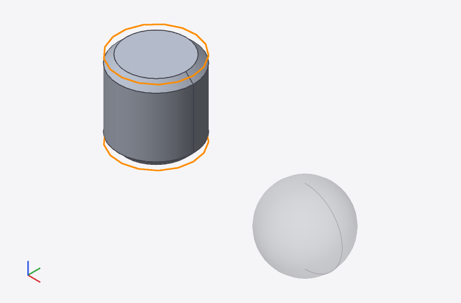
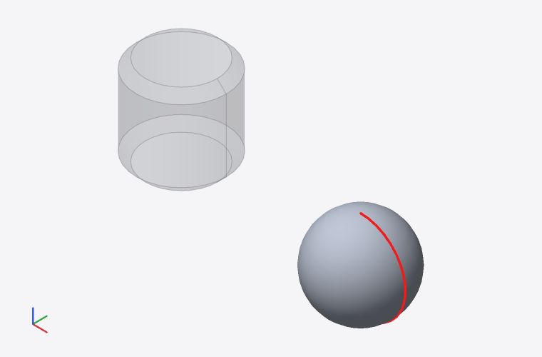
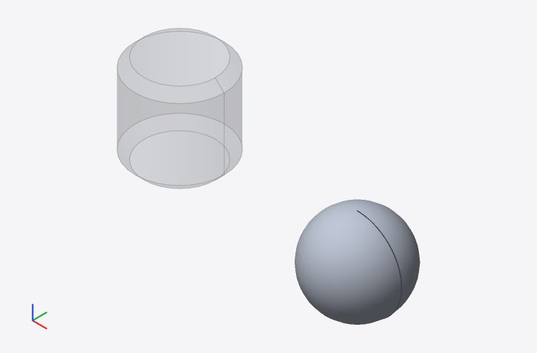
F4 fase_chamfer.scad: union(chamfer) wählte acht Kanten
- Ursache
- „Neue Kanten“ einer Booleschen Operation waren Kanten zwischen Flächen verschiedener Operanden (Flächen-Tags). Teilen sich zwei Operanden eine Ebene (Platte und Turm mit gleicher Vorder- und Rückseite), verschmilzt SMLib die Flächen zu einer mit dem Tag eines Operanden; die sechs alten Turmkanten an Vorder- und Rückseite trennten dann Flächen verschiedener Operanden und galten als neu. Die Fase an diesen Kanten scheiterte (
SM_ERR). - Korrektur
- Eine Kante, die auf einer Kante eines Operanden liegt, ist nicht neu (Abtastpunkte auf dem Kantenzug eines Operanden, Toleranz 10−6 der Modellgröße).
- Hinweise
- vorher: union: 8 Kanten · nachher: union: 2 Kanten
Meldungen vorher: Z.1: Fehler (Kernel): Fase gescheitert (0.5 mm): chamfer failed: SM_ERR (1001) · nachher: – - Nachweis
coplanar_merged_faces_keep_old_edges_old(2 Kanten, Volumen 2502,5 mm³), fase_chamfer.scad fehlerfrei (Stufe 1, STEP, Laufzeittabelle).
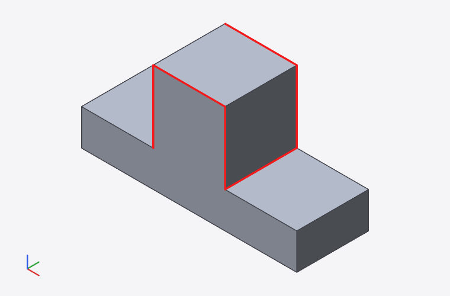
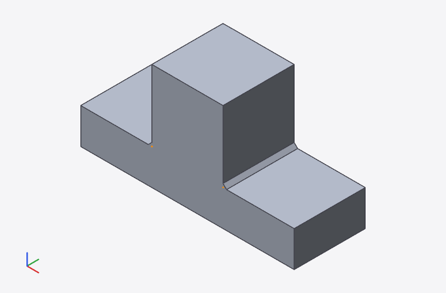
4 Variabler Radius
Architektur: auswertbare Beschreibung statt Rückruf
Die Kanten, an denen der Radius gebraucht wird, gibt es erst, wenn der Kernel den Körper gebaut hat – lange nach der Auswertung, in der Engine. Zwei Wege: ein Rückruf aus der Engine in die Auswertung, oder die Auswertung liefert eine auswertbare Beschreibung der Funktion. Gewählt ist die Beschreibung: cad-eval übersetzt das Funktionsliteral in ein Radiusgesetz (cad_ir::Law), einen kleinen reinen Ausdruck über p. Was nicht von p abhängt (eingefangene Variablen, Rasterebenen, Listenausdrücke, beliebige Builtins), wird dabei schon ausgewertet und ist Konstante; Aufrufe von Benutzerfunktionen und Funktionswerten werden eingesetzt (Parameter als lokale Slots, Tiefe ≤ 16); übrig bleiben Literale, Arithmetik, Vergleiche, && || ! ?:, let, Indizes, .x/.y/.z, Vektoren und die Mathe-Builtins (sin … lookup).
- Das Gesetz ist Teil des Baums (serialisierbar, Teil des Cache-Schlüssels): eine geänderte eingefangene Variable ändert den Schlüssel, gleicher Quelltext trifft den Cache. Ein Rückruf bräuchte dafür einen eigenen Schlüssel der Closure samt Umgebung.
- Die Engine hängt weiter nicht von
cad-evalund dessen AST-Lebensdauer ab; Wasm und nativ werten dasselbe Datenobjekt aus, auch aus dem Cache, ohne erneute Auswertung des Quelltexts. - Grenze: nur der reine Ausdruckskern ist von
pabhängig möglich (keine Texte, keine Listenausdrücke überp, keine Rekursion überp); solche Fälle sind Fehler an der Funktion mit eigener Meldung.
Ablauf
- Auswertung:
fillet(r = function …)→Op::Blend { law },difference(fillet = function …)→Op::Boolean { fillet_law }.chamferund$filletmit Funktion: Warnung, nicht unterstützt. - Engine: Kantenwahl wie beim konstanten Radius (Zonen, neue Kanten, ohne glatte Kanten); je Kante m Stützpunkte (etwa einer je 1,5 mm, 4 bis 32) von
Kernel::law_stations; das Gesetz im System der fillet-/Boolean-Anweisung an jedem Stützpunkt ausgewertet. Radius ≤ 0, keine Zahl → Fehler mit Wert und Position, Kante rot, Körper unverändert. Alle Werte gleich → konstante Verrundung (gleiches Ergebnis wiefillet(r)). SonstKernel::fillet_variable; Kernelfehler wie beim konstanten Radius mit dem Bereich („Verrundung gescheitert (8–18 mm): …“). Hinweis am Zeilenende: „r min–max“ der Stützwerte. - Fassade (
sc_law_stations,sc_fillet_var): das Gesetz einer Kante ist ein geklemmter B-Spline vom Grad min(3, m − 1) über dem normierten Kantenparameter mit gleichmäßigen inneren Knoten, Kontrollradius j am Greville-Punkt tj (dort liegen die Stützpunkte). Er bleibt zwischen kleinstem und größtem Wert, ist exakt für konstante und lineare Verläufe und nimmt an den Kantenenden den ersten und letzten Wert an. AlsSmBSplineFilletLawträgt die Gesetzeskurve den Radius als x und t selbst als y (Kontrollpunkte (rj, tj), also y(t) = t), damit SMLib sie an Ecken über die Kantenenden hinaus verlängern kann. Je Kante SMLibs Variabler-Radius-Löser (SM_FS_VARIABLE_RADIUS), Kanten mit gleichen Werten der konstante.
Messwerte
| x (mm) | Gesetz 1 + x/15 | gemessen (Beginn der Deckfläche) | Abw. |
|---|---|---|---|
| 2,0 | 1,1333 | 1,1227 | -0,94 % |
| 7,5 | 1,5000 | 1,4878 | -0,81 % |
| 15,0 | 2,0000 | 1,9859 | -0,71 % |
| 22,5 | 2,5000 | 2,4843 | -0,63 % |
| 28,0 | 2,8667 | 2,8498 | -0,59 % |
Eine Kante eines 30 × 20 × 20-Quaders mit linearem Gesetz: Radius gemessen über Punktklassifikation knapp unter der Deckfläche (dort beginnt die Rundung; bei wachsendem Radius liegt die Berührlinie etwas hinter r(x)). Volumen gegen die geschlossene Form 12000 − (1 − π/4)·130: Abweichung < 10−5 (Rust- und Node-Test).
Stufengesetz p.z < 10 ? 2 : 4 an allen 12 Kanten eines 30 × 30 × 20-Quaders: 17.346,308 mm³, zwischen r = 4 (16.986,950 mm³) und r = 2 (17.736,024 mm³).
Taschenrand mit 1 + p.x / 40: 9.434,560 mm³ zwischen r = 1,875 (9.411,622 mm³) und r = 1,125 (9.455,670 mm³).
variabler_radius.scad: 56.527,548 mm³, STEP 55 Flächen, cad export 1660 ms.
| Zeile | vorher | nachher |
|---|---|---|
| 11 | fillet: 12 Kanten | fillet: 12 Kanten · r 2–4 |
| 16 | difference: – | difference: 4 Kanten · r 1.125–1.875 |
| 22 | fillet: 1 Zone · 4 Kanten | fillet: 1 Zone · 4 Kanten · r 1.5–3.9 |
| Diagnosen | Z.11: Warnung (Auswertung): variabler Radius `r` (Funktion) noch nicht unterstützt Z.16: Warnung (Auswertung): variabler Radius `fillet` (Funktion) noch nicht unterstützt Z.22: Warnung (Auswertung): variabler Radius `r` (Funktion) noch nicht unterstützt Z.11: Fehler (Kernel): Verrundung gescheitert (0 mm): invalid input: fillet size must be > 0 Z.22: Fehler (Kernel): Verrundung gescheitert (0 mm): invalid input: fillet size must be > 0 | – |
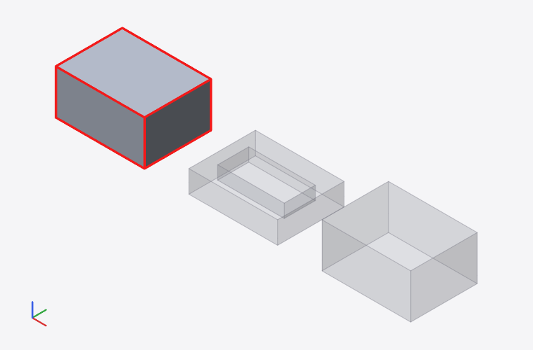
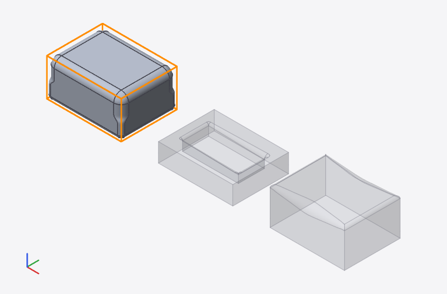
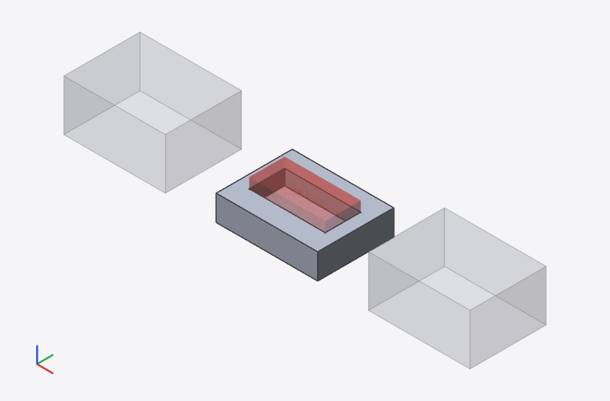
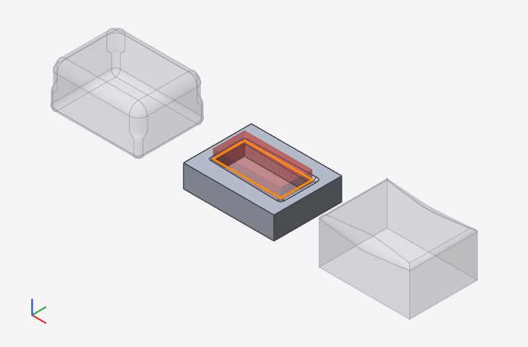
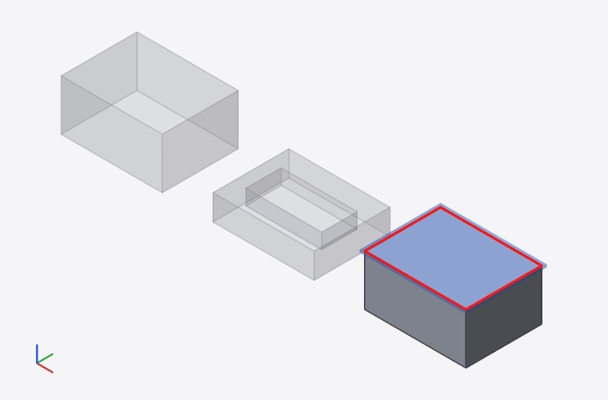
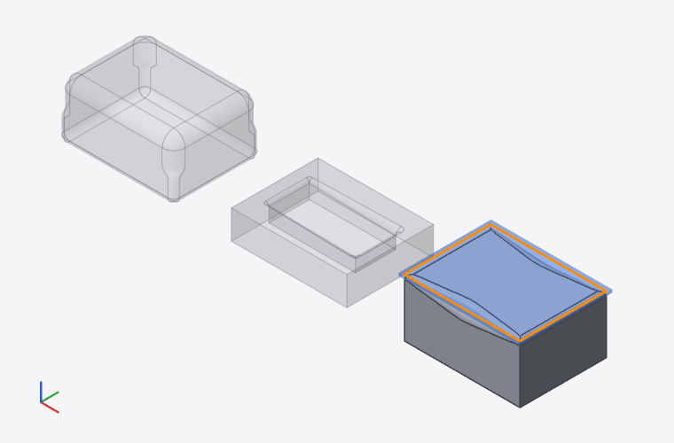
5 Nativ und Wasm
Szene von cad eval --json (nativ) gegen web/scripts/dump-scene.mjs (Browser-Engine in Node: cad-wasm + smlib.wasm) je Knoten: Status, Hinweise, Anzahl ausgewählter Kanten, Hülle (10−4 mm), Meldungen, und die Diagnosen.
| Datei | Knoten | davon Fehler | Ergebnis | Abweichung |
|---|---|---|---|---|
| F1 (drei Fälle) | 12 | 0 | identisch | |
| F1 (r = 6) | 4 | 0 | identisch | |
| dose_shell.scad | 9 | 0 | identisch | |
| F2 | 9 | 0 | identisch | |
| F3 | 4 | 0 | identisch | |
| F4 | 5 | 0 | identisch | |
| variabler_radius.scad | 12 | 0 | identisch | |
| griffschale.scad | 19 | 0 | identisch | |
| fillet_zonen.scad | 16 | 0 | identisch |
6 Laufzeiten cad export (alle Beispiele)
cad export <datei> -o x.stl (Release, Wandzeit inkl. Start, ein Lauf je Datei, nacheinander) vorher (Stand vor diesem Auftrag) und nachher. Summe über 47 gemeinsame Dateien: vorher 21743 ms, nachher 23587 ms. Exit 1 = Diagnosen mit Fehlern (vorher dose_shell, fase_chamfer).
| Datei | vorher | nachher | Δ |
|---|---|---|---|
| spec/dose_shell.scad | 988 ms (Exit 1) | 1925 ms | +937 ms |
| spec/fase_chamfer.scad | 319 ms (Exit 1) | 394 ms | +75 ms |
| spec/fillet_zonen.scad | 429 ms | 439 ms | +10 ms |
| spec/flasche.scad | 715 ms | 673 ms | -42 ms |
| spec/freiformdeckel.scad | 3657 ms | 3868 ms | +211 ms |
| spec/gehaeuse.scad | 40 ms | 56 ms | +16 ms |
| spec/griffschale.scad | 584 ms | 693 ms | +109 ms |
| spec/kabelfuehrung.scad | 426 ms | 595 ms | +169 ms |
| spec/knauf_mirror.scad | 2308 ms | 2224 ms | -84 ms |
| spec/lochplatte.scad | 957 ms | 1127 ms | +170 ms |
| spec/loft_sweep.scad | 811 ms | 698 ms | -113 ms |
| spec/lueftungsgitter.scad | 549 ms | 519 ms | -30 ms |
| spec/winkel_anker.scad | 242 ms | 326 ms | +84 ms |
| openscad-compat/01_cube_variants.scad | 30 ms | 38 ms | +8 ms |
| openscad-compat/02_sphere_variants.scad | 774 ms | 737 ms | -37 ms |
| openscad-compat/03_cylinder_variants.scad | 150 ms | 176 ms | +26 ms |
| openscad-compat/04_cone_variants.scad | 103 ms | 117 ms | +14 ms |
| openscad-compat/05_nested_booleans.scad | 1301 ms | 1467 ms | +166 ms |
| openscad-compat/06_hole_grid.scad | 1304 ms | 1128 ms | -176 ms |
| openscad-compat/07_crown_ring.scad | 783 ms | 701 ms | -82 ms |
| openscad-compat/08_module_children.scad | 262 ms | 312 ms | +50 ms |
| openscad-compat/09_rotate_mirror.scad | 81 ms | 57 ms | -24 ms |
| openscad-compat/10_scale_multmatrix.scad | 29 ms | 26 ms | -3 ms |
| openscad-compat/11_linear_extrude_basic.scad | 14 ms | 15 ms | +1 ms |
| openscad-compat/12_linear_extrude_twist.scad | 390 ms | 480 ms | +90 ms |
| openscad-compat/13_rotate_extrude_ring.scad | 521 ms | 585 ms | +64 ms |
| openscad-compat/14_pipe_bend.scad | 486 ms | 484 ms | -2 ms |
| openscad-compat/15_vase.scad | 164 ms | 168 ms | +4 ms |
| openscad-compat/16_polygon_holes.scad | 40 ms | 45 ms | +5 ms |
| openscad-compat/17_polyhedron.scad | 11 ms | 17 ms | +6 ms |
| openscad-compat/18_functions_let.scad | 43 ms | 78 ms | +35 ms |
| openscad-compat/19_hex_nut.scad | 96 ms | 162 ms | +66 ms |
| openscad-compat/20_box_with_lid.scad | 546 ms | 710 ms | +164 ms |
| openscad-compat/21_angle_bracket.scad | 267 ms | 303 ms | +36 ms |
| openscad-compat/22_gear.scad | 340 ms | 320 ms | -20 ms |
| openscad-compat/23_shelf_holder.scad | 176 ms | 212 ms | +36 ms |
| openscad-compat/24_modifiers.scad | 45 ms | 49 ms | +4 ms |
| openscad-compat/25_root_modifier.scad | 42 ms | 44 ms | +2 ms |
| openscad-compat/26_if_else_variants.scad | 273 ms | 268 ms | -5 ms |
| openscad-compat/27_spacers_2d.scad | 414 ms | 367 ms | -47 ms |
| openscad-compat/28_cable_clip.scad | 177 ms | 178 ms | +1 ms |
| openscad-compat/29_assert_strings.scad | 64 ms | 61 ms | -3 ms |
| openscad-compat/30_each_ranges.scad | 80 ms | 67 ms | -13 ms |
| openscad-compat/31_phone_stand.scad | 34 ms | 33 ms | -1 ms |
| openscad-compat/32_low_fn_shapes.scad | 42 ms | 39 ms | -3 ms |
| openscad-compat/33_global_fn.scad | 256 ms | 253 ms | -3 ms |
| projekt-gehaeuse/gehaeuse.scad | 380 ms | 353 ms | -27 ms |
| spec/variabler_radius.scad | – | 1660 ms | – |
7 Tests
- cargo test --workspace (3 Läufe, ohne Ausfälle zwischen den Läufen): 298 bestanden, 0 fehlgeschlagen · 298 bestanden, 0 fehlgeschlagen · 298 bestanden, 0 fehlgeschlagen.
- cargo clippy --workspace --all-targets: 3 Warnungen, 0 Fehler; die Warnungen stehen in nicht geänderten Dateien (
crates/cad-eval/src/edit.rs,crates/cad-eval/tests/project_openscad.rs,crates/cad-engine/src/parts.rs) und bestanden schon vorher – keine neuen. - node crates/kernel-smlib/js/test-node.mjs (smlib.wasm über die Brücke): 15 / 15 – neu: Kantenflags, surface 2 × 2/3 × 3/2 × 5, shell eines verrundeten Quaders (Volumen auf 10−6), variabler Radius (Stützpunkte, lineares Gesetz, Radius ≤ 0).
- OpenSCAD-Vergleich (compare.py):
33/33 files match. - STEP mit OpenCASCADE (
tests/step/verify.pyüber alle Beispiele):47/47 passed. - Vitest: 168 / 168; pnpm typecheck ohne Fehler.
- Playwright: 70 / 70 (bisherige Szenarien 65 / 65, neu 5 / 5).
| ID | Szenario (web/e2e/ui-e.spec.ts) | Ergebnis | Dauer | Geprüft |
|---|---|---|---|---|
| E01 | Variabler Radius: Hinweis „r 2–4“, Kanten orange, Ergebnis verrundet | bestanden | 5.7 s |
|
| E02 | Variabler Radius: Radius ≤ 0 und zu großer Radius wie beim konstanten Radius | bestanden | 2.4 s |
|
| E03 | shell eines verrundeten Körpers: dose_shell.scad und die drei Fälle aus Bericht 4 | bestanden | 8.8 s |
|
| E04 | Naht- und Polkanten zählen nicht: Zylinder 2 Kanten, Kugel 0 Kanten | bestanden | 2.9 s |
|
| E05 | surface aus 2 × 2 und 3 × 3 Punkten | bestanden | 2.8 s |
|
| Rust-Testprogramm (letzter Lauf) | bestanden | neue Tests |
|---|---|---|
| tests/cli.rs | 9 / 9 | – |
| tests/projects.rs | 3 / 3 | – |
| src/lib.rs | 7 / 7 | – |
| tests/draft.rs | 3 / 3 | – |
| tests/engine.rs | 25 / 25 | – |
| tests/kernel_fixes.rs neu | 12 / 12 | coplanar_merged_faces_keep_old_edges_old, dose_shell_example_is_a_hollow_box, law_changes_change_the_cache_key, seams_and_poles_are_not_edges, shell_too_thick_still_fails, tangent_edges_of_rounds_are_not_selected, shell_of_rounded_boxes, variable_radius_captured_values_user_functions_and_booleans, surfaces_from_two_and_three_points_per_direction, variable_radius_errors_like_constant_radius, variable_radius_linear_law_on_one_edge, variable_radius_step_law_between_constant_radii |
| tests/spec_examples.rs | 4 / 4 | – |
| tests/expr.rs | 25 / 25 | – |
| tests/grids.rs | 14 / 14 | – |
| tests/handles.rs | 26 / 26 | – |
| tests/law.rs neu | 5 / 5 | step_law_and_text, boolean_parameter_and_trig, law_is_part_of_the_tree_data, captured_values_functions_let_and_builtins, unsupported_parts_are_errors |
| tests/limits.rs | 8 / 8 | – |
| tests/openscad_compat.rs | 1 / 1 | – |
| tests/openscad_deviations.rs | 10 / 10 | – |
| tests/project.rs | 16 / 16 | – |
| tests/project_openscad.rs | 2 / 2 | – |
| tests/tree.rs | 24 / 24 | – |
| src/lib.rs | 2 / 2 | law::tests::step_law, law::tests::let_lookup_and_errors |
| src/lib.rs | 5 / 5 | – |
| tests/render.rs | 4 / 4 | – |
| tests/project.rs | 5 / 5 | – |
| tests/protocol_ts.rs | 1 / 1 | – |
| tests/session.rs | 8 / 8 | – |
| tests/watchdog.rs | 2 / 2 | – |
| src/lib.rs | 3 / 3 | – |
| tests/writer.rs | 6 / 6 | – |
| src/lib.rs | 19 / 19 | – |
| tests/openscad_compat.rs | 1 / 1 | – |
| tests/spec_models.rs | 1 / 1 | spec_models_stage1 |
| tests/tree_bounds.rs | 1 / 1 | – |
| tests/brep.rs | 5 / 5 | – |
| tests/determinism.rs | 1 / 1 | – |
| tests/facade4.rs neu | 5 / 5 | edges_flag_seams_poles_and_tangent_edges_as_smooth, law_stations_and_a_linear_law, facade_version, surfaces_get_the_degree_their_point_count_allows, shell_of_a_rounded_box_open_at_the_top |
| tests/handles.rs | 1 / 1 | – |
| tests/kernel.rs | 33 / 33 | – |
| tests/coverage.rs | 1 / 1 | – |
8 Grenzen
- shell aus Booleans nur für ebene geöffnete Flächen (das Prisma ist die aufgedickte Versatzfläche); bei gekrümmten geöffneten Flächen bleibt SMLibs Ergebnis bzw. dessen Fehlermeldung. Geschlossene Schalen (ohne Zone) nehmen weiter SMLibs Ergebnis, wenn es gültig ist. Die Booleans kosten Zeit: dose_shell 988 ms (scheiternd) → 1925 ms (Abschnitt 6); in smlib.wasm (Node-Test, 90 × 34 × 18, r 3) 1758.4 ms.
- Wanddicke ≥ Rundungsradius (r ≤ t, z. B. 30 × 20 × 10 mit r 1, Wand 2): der Innenversatz wäre scharfkantig; SMLibs Versatz scheitert dort in 7eba8aa (
SM_ERR, Fork-Commit a252570 nicht übernommen), die Schale bleibt wie vorher ein Fehler (Meldung nennt beide Wege). - Variabler Radius: SMLibs Variabler-Radius-Löser ist empfindlich. Steile Verläufe mit großem Radius an Taschenecken scheitern („überlappt sich“, z. B. Taschenrand mit 1 + p.x/20, 1,25–2,75), ebenso Kreiskanten mit veränderlichem Radius (
SM_ERR); das Beispiel nutzt deshalb 1 + p.x/40. Sprünge (p.z < 10 ? 2 : 4an senkrechten Kanten) werden über etwa drei Stützpunktabstände geglättet; der Hinweis zeigt den Bereich der Stützwerte (lookup-Spitze 4 → „3.9“, weil kein Stützpunkt genau auf x = 20 liegt). Positionpim System der fillet-/Boolean-Anweisung. Kein variabler Radius fürchamferund$fillet(Warnung). - Glatte Kanten: SMLibs Kriterium (Flächen innerhalb 2° tangential) – fast tangentiale Kanten werden nie gewählt. Die Prüfung „alte Kante eines Operanden“ (F4) vergleicht mit den Kantenzügen der Operanden, für gekrümmte Kanten nur so genau wie deren Abtastung (dort bleibt die frühere Wahl).
- SMLib-Patch als Arbeitskopie-Patch über 7eba8aa (der Fork-Commit liegt nicht auf
capi-tess); vorgebaute Bibliotheken (SMLIB_PREBUILT) müssen mit dem Patch neu gebaut werden (Header-Änderung, sonst ODR-Bruch). Ein Symlinkthird_party/smlibwird vonfetch.shnur geprüft.
9 Screenshots der Browser-UI
E01 Variabler Radius im Browser
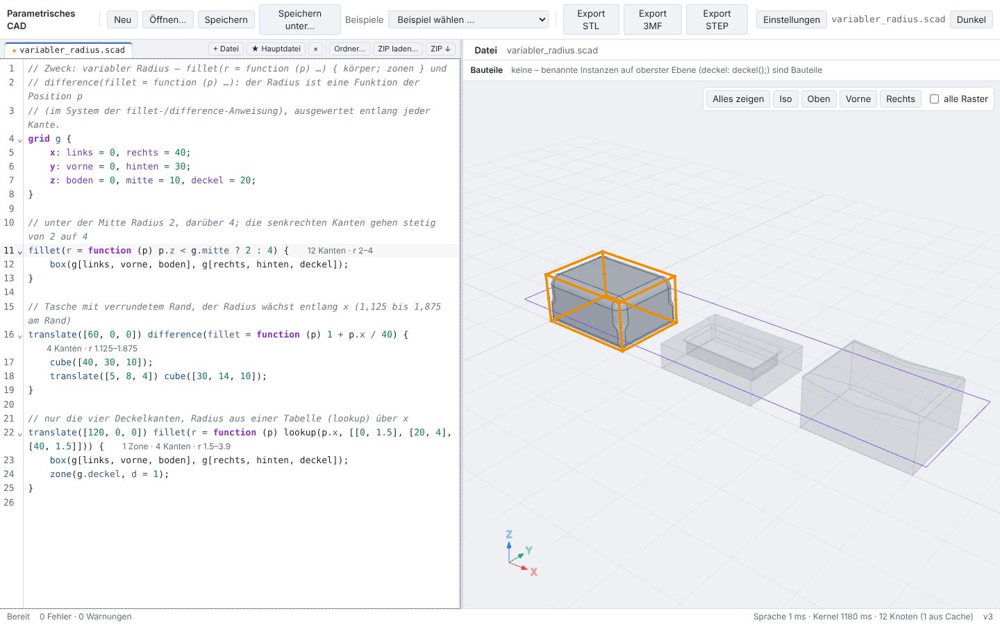
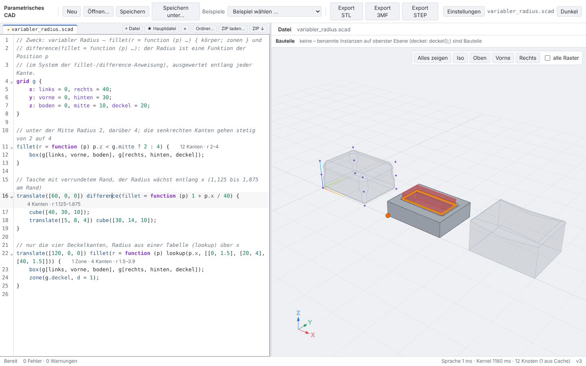
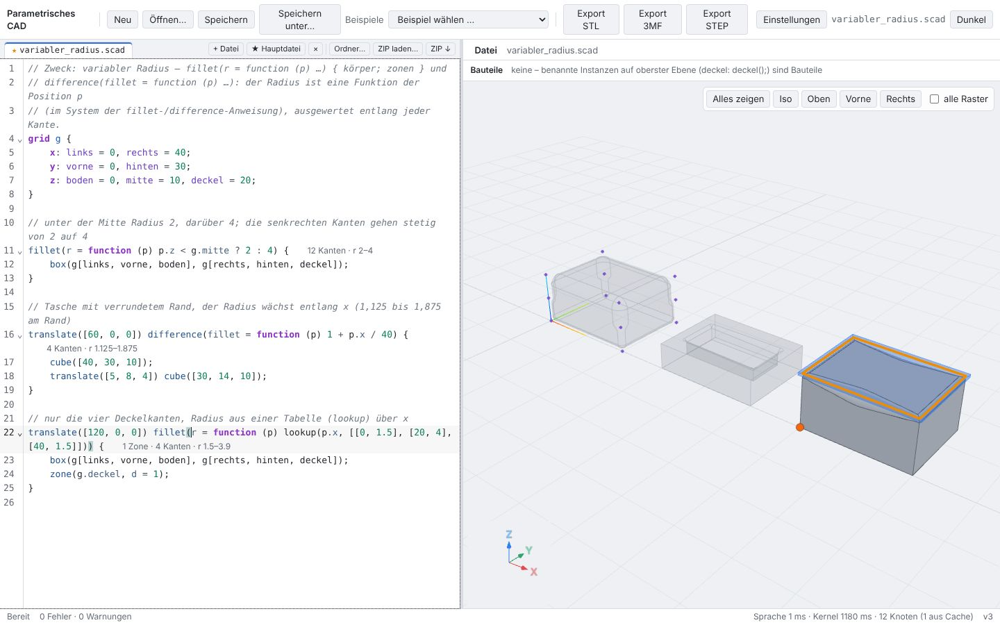
// unter der Mitte Radius 2, darüber 4; die senkrechten Kanten gehen stetig von 2 auf 4
fillet(r = function (p) p.z < g.mitte ? 2 : 4) {
box(g[links, vorne, boden], g[rechts, hinten, deckel]);
}
// Tasche mit verrundetem Rand, der Radius wächst entlang x (1,125 bis 1,875 am Rand)
translate([60, 0, 0]) difference(fillet = function (p) 1 + p.x / 40) {
cube([40, 30, 10]);
translate([5, 8, 4]) cube([30, 14, 10]);
}
// nur die vier Deckelkanten, Radius aus einer Tabelle (lookup) über x
translate([120, 0, 0]) fillet(r = function (p) lookup(p.x, [[0, 1.5], [20, 4], [40, 1.5]])) {
box(g[links, vorne, boden], g[rechts, hinten, deckel]);
zone(g.deckel, d = 1);
}variabler_radius.scad: der Radius ist eine Funktion der Position. Am Zeilenende stehen Kantenzahl und Radiusbereich der ausgewerteten Stützpunkte („12 Kanten · r 2–4“, „4 Kanten · r 1.125–1.875“, „1 Zone · 4 Kanten · r 1.5–3.9“); ausgewählte Kanten orange, Zone blau wie beim konstanten Radius.
E02 Fehlerfälle des variablen Radius
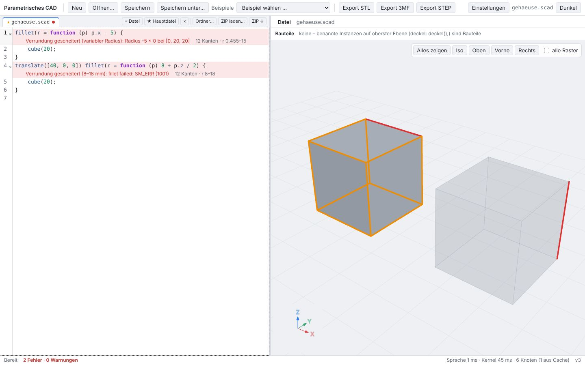
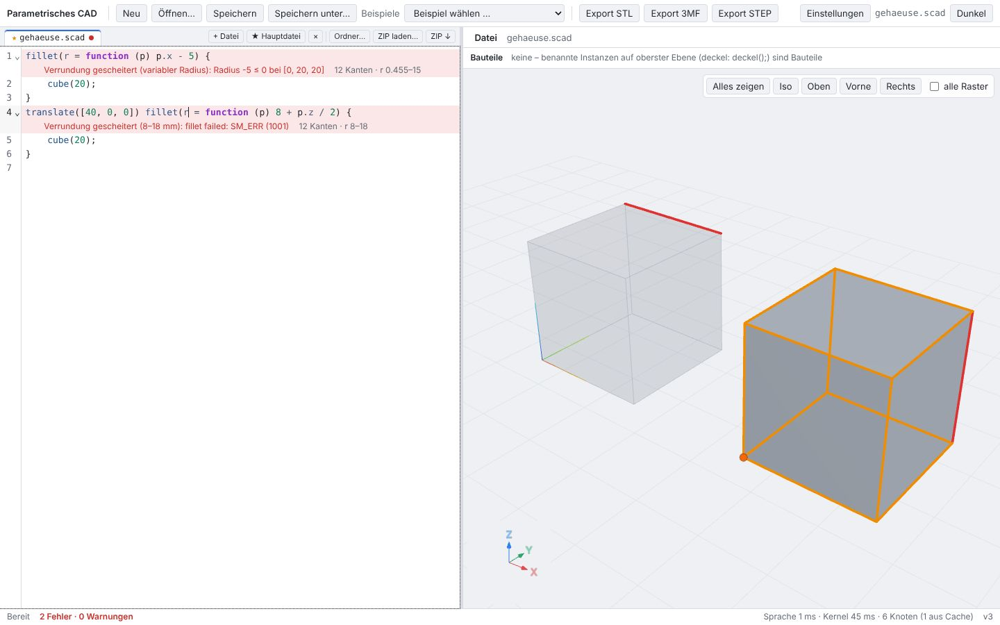
fillet(r = function (p) p.x - 5) {
cube(20);
}
translate([40, 0, 0]) fillet(r = function (p) 8 + p.z / 2) {
cube(20);
}Radius ≤ 0 an einem Stützpunkt: Zeile rot, Meldung mit Wert und Position, die Kante rot, der Würfel bleibt ohne Verrundung (12 Dreiecke). Zu großer Radius: Kernel-Meldung mit dem Radiusbereich, Körper unverändert – wie beim konstanten Radius.
E03 shell verrundeter Körper
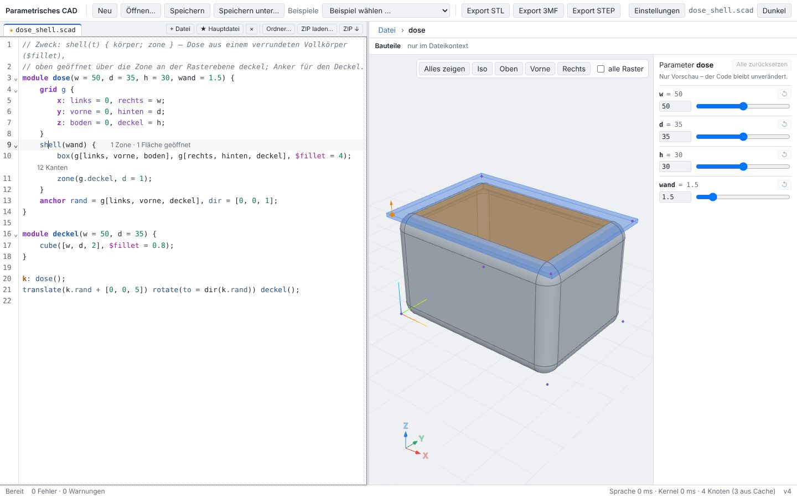
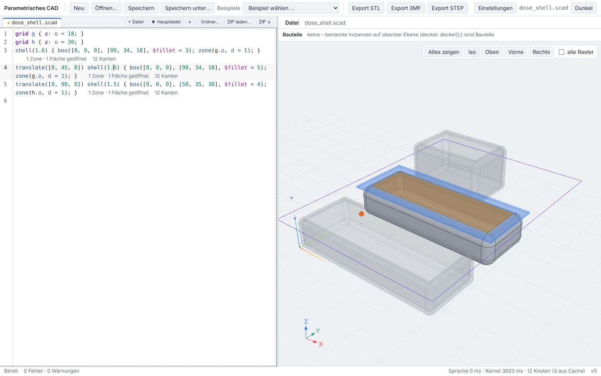
grid g { z: o = 18; }
grid h { z: o = 30; }
shell(1.6) { box([0, 0, 0], [90, 34, 18], $fillet = 3); zone(g.o, d = 1); }
translate([0, 45, 0]) shell(1.6) { box([0, 0, 0], [90, 34, 18], $fillet = 5); zone(g.o, d = 1); }
translate([0, 90, 0]) shell(1.5) { box([0, 0, 0], [50, 35, 30], $fillet = 4); zone(h.o, d = 1); }dose_shell.scad ist wieder grün: ein geschlossener Hohlkörper mit Öffnung oben, „1 Zone · 1 Fläche geöffnet“. Die drei Fälle aus Bericht 4 (früher SM_ERR_NULL_POINTER, „leaves no cavity“, „self-overlapping“) ergeben Hohlkörper.
E04 Naht- und Polkanten
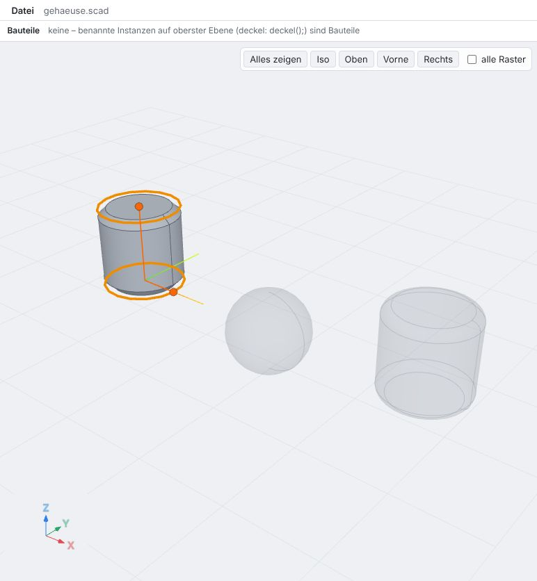
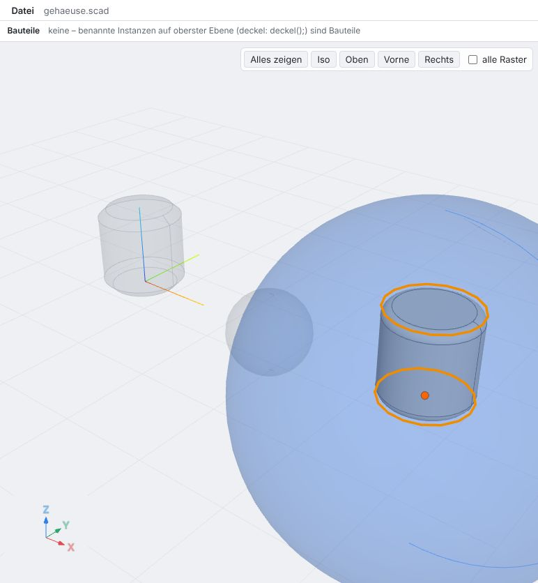
cylinder(h = 10, r = 5, $chamfer = 1);
translate([20, 0, 0]) sphere(5, $fillet = 1);
translate([40, 0, 0]) fillet(1) { cylinder(h = 10, r = 5); sphere(20); }Die Naht des Zylinders und die Naht/Pole der Kugel sind glatt und werden nie ausgewählt: $chamfer am Zylinder „2 Kanten“ (vorher 3), $fillet an der Kugel „0 Kanten“ als Warnung ohne Wirkung (vorher Fehler), Zonenauswahl um den ganzen Zylinder ebenfalls 2 Kanten.
E05 surface aus wenigen Punkten
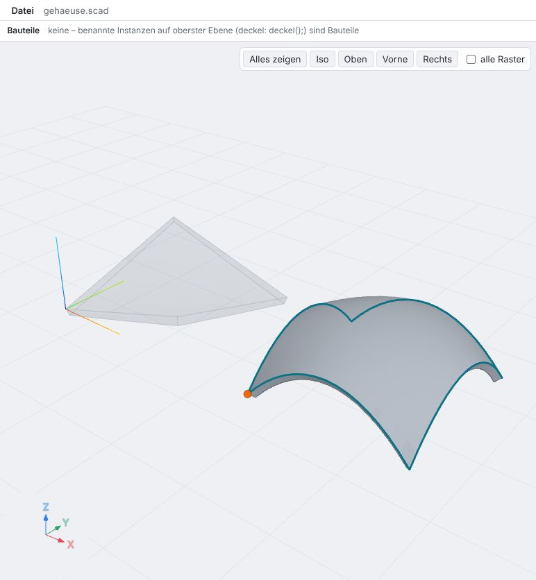
thicken(1) surface(points = [[[0, 0, 0], [20, 0, 6]], [[0, 20, 6], [20, 20, 0]]]); translate([30, 0, 0]) thicken(1) surface(points = [[[0, 0, 0], [10, 0, 6], [20, 0, 0]], [[0, 10, 6], [10, 10, 9], [20, 10, 6]], [[0, 20, 0], [10, 20, 6], [20, 20, 0]]]);
surface(points) mit 2 × 2 (bilinear) und 3 × 3 Punkten (quadratisch) wird erzeugt und lässt sich aufdicken (vorher SmApiCreateSurfaceFromOrderedPoints … SM_ERR).